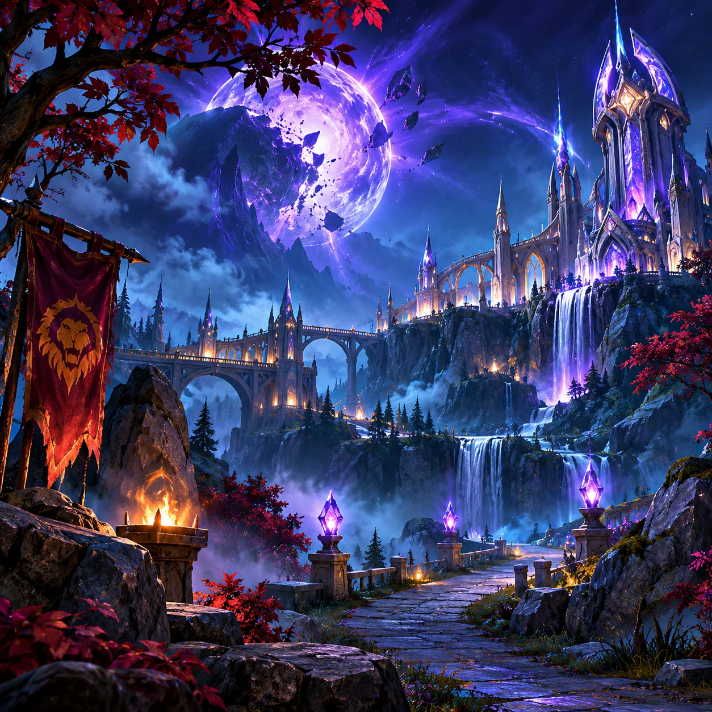

Univers gaming · Real Just Jack
World of Warcraft
Aventures et exploration
World of Warcraft est un MMORPG qui permet de parcourir Azeroth, suivre des quêtes et découvrir de nombreuses histoires.
Retrouver Jack sur Twitch ↗
Découvrir cet univers en live
Sur mes lives, je privilégie les quêtes, les paysages et les échanges tranquilles avec les spectateurs.
Conseil pour commencer
Choisis une région à explorer, lis les quêtes et prends le temps de découvrir l’univers à ton rythme.
À toi de jouer !
Tu connais cet univers ? Teste tes connaissances avec le quiz interactif du quartier général et tente de débloquer un succès.
Lancer les défis du QG →Explorer les autres univers
⚔️MINI-EXPÉRIENCE JOUABLE
La route d’Azeroth
Choisis ton parcours, gère ton énergie et termine ton aventure.
Niveau 10 XP0 / 4 univers terminés
Nouvelle expérience · Histoire à choix
Le secret de la forêt
Une aventure fictive à embranchements dans un monde fantastique.
Fiction interactive gratuite. Progression enregistrée uniquement dans ce navigateur, sans compte.